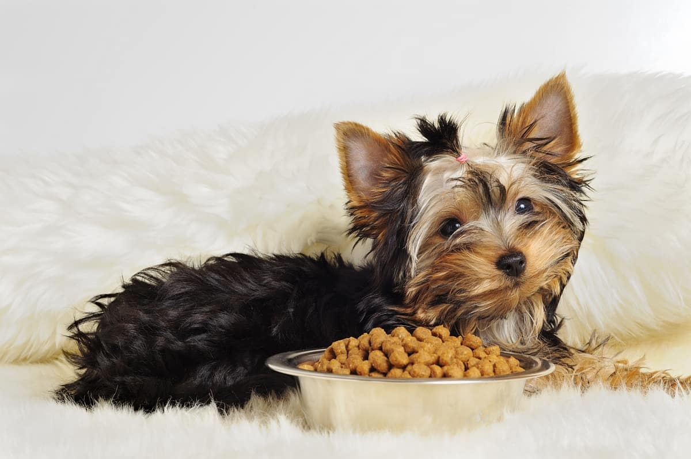

تغذیه مناسب مهمترین عامل در سلامت و طول عمر سگهاست و ما صاحبان سگ به دنبال بهترین غذا برای سگمون هستیم. غذای خشک سگ به اعتقاد دامپزشکان بهترین و سالمترین نوع غذا برای سگه و اکثر صاحبان سگ هم از این رژیم غذایی استفاده میکنن.
خیالت راحت ما این راهو بلدیم و تو این مقاله پت پرس همه نکاتی که باید درباره بهترین غذای خشک سگ ایرانی و خارجی، مزایای اون و نحوه و میزان مصرفش بهتون بگیم.
غذای تجاری برای سگ
غذاهای تجاری سگ در دو دستهبندی کلیِ غذای خشک و غذای کنسروی وجود دارن (کنسرو سگ). هردو غذا مزایا و معایب خاص خودشون رو دارن؛ اما غذای خشک سگ به خاطر مزایای بیشتری که داره توصیه میشه.
ما در مطلب غذای سگ چیست به طور مفصل و جامع در مورد تغذیه و رژیم غذایی مناسب برای سگ و نکات تغذیهایِ مهم صحبت کردیم که پیشنهاد میکنیم اون مطلب رو هم مطالعه کنید.
اما الان میخوایم اختصاصا در مورد بهترین غذای خشک سگ و راهنمای انتخاب محصول با شما صحبت کنیم.

مزایای غذای خشک
- غذای خشک به خاطر رطوبت کمی که داره نگهداری راحتی داره و میتونید مدتهای طولانی اونو بدون نیاز به یخچال نگهداری کنید.
- غذای خشک قیمت بسیار پایینتری (از کنسرو) داره و در دراز مدت باعث کاهش هزینههای نگهداری از سگ میشه.
- فرمولاسیون غذای خشک بسیار کامله و تمام نیازهای تغذیهای سگ به پروتئین، کربوهیدرات، ویتامینها و مواد معدنی رو تامین میکنه.
- در واقع، سگی که غذای خشک میخوره به ندرت (مگر به توصیه دامپزشک) نیاز به مکملهای غذایی دیگه داره.
- غذای خشک رو به راحتی میتونید در سفر و … همراه خودتون ببرید و به سگتون غذا بدید.
- غذای خشک میتونه ساعتها در ظرف غذا باقی بمونه و خراب نشه (برای مواقعی که خونه نیستید).
چه مواد غذایی باید حتما در غذاهای خشک وجود داشته باشه؟
برای اینکه بتونید بهترین و باکیفیتترین غذای خشک رو برای سگتون بخرید باید بدونید که ترکیبات غذای خشک اصلا چه چیزهاییه.
سگها برخلاف گربهها، گوشتخوار اجباری نیستن و اگرچه گوشت بخش اعظمی از رژیم غذاییشون رو تشکیل میده اما به منبع غذایی دیگه مثل غلات و سبزیجات و میوهها هم نیاز دارن.
بهترین غذای خشک سگ که کیفیت خوبی داره باید حاوی مواد زیر باشه:
- پروتئین: پروتئین انواع گوشت مثل مرغ، گاو، بره، ماهی و … و همینطور پروتئین گیاهی
- چربی: چربیهای مفید مثل اسیدهای چرب امگا ۳ و امگا ۶
- فیبر: فیبر موجود در سبزیجات و غلات
- مواد معدنی: مثل کلسیم، فسفر، منیزیم و آهن
- ویتامینها: مثل ویتامین A، C، D و B
غذای خانگی سگ میتونه جایگزین غذای تجاری بشه؟
طبق گفته سایت petmd هر دو نوع غذای خشک و غذای خونگی میتونن برای سگها مزایا و معایب خودشون رو داشته باشن.
همونقدر که غذای خونگی میتونه سرشار از انواع ویتامین و پروتئین باشه، اگه بالانس نشه ممکنه منجر به افزایش وزن در سگ بشه. از طرف دیگه اگه شما تو خرید غذای خشک سگ خارجی یا ایرانی دقت نکنین و غذای بیکیفیت به سگتون بدین خب طبیعیه که اون دچار کمبود پروتئین و ویتامین میشه.
غذای خانگی سگ اگه براساس دستور غذای دامپزشک تهیه نشه نمیتونه نیازهای تغذیهای سگ رو تامین کنه و در دراز مدت باعث مشکلات سلامتی زیادی میشه.
ولی بالانس کردن ترکیبات غذا کاری تخصصی و پیچیده است و نیاز به تخصص دامپزشک داره.
خیالت راحت، ما این راهو بلدیم و دامپزشکای پت پرس میتونن یه برنامه غذایی ویژه و اختصاصی برای سگ شما بنویسن. کافیه مشخصاتی مثل نژاد، وزن، سن، فعالیت و … رو به ما بدین و بعد، کاملترین و بهترین برنامه غذایی رو برای سگ عزیزتون تحویل بگیرین.
دوست داری از تیم تغذیه پت پرس برای سگ قشنگت برنامه غذایی خونگی بگیری؟
سفارش آسان از طریق اپلیکیشن یا پر کردن فرم در صفحه برنامه غذایی

مقدار و حجم غذای خشک مورد نیاز سگ در روز چقدره؟
رک و راست بهتون میگیم که یه جوابِ دقیق و مشخص برای این سوال وجود نداره؛ چون مهمتر از حجم و وزنِ غذا، کیفیت و مواد مغذی اون محصوله که باید بهش توجه کرد.
به این ترتیب ۲۰۰ گرم از یه غذای خشک باکیفیت ممکنه برای سگ کافی باشه و مواد غذایی مورد نیاز بدنش رو به خوبی تامین کنه؛ اما ۴۰۰ گرم از یه غذای بی کیفیت و ارزان برای سگ اصلا «کافی» نباشه، فقط شکم سگتون رو پر کنه و در دراز مدت اونو دچار مشکلات تغذیهای و سلامتی کنه.
نکته دیگه اینکه مقدار غذای روزانه سگ رو یکباره بهش ندید و اونو در دو وعده (صبح و عصر) تقسیم کنید.
البته این مورد به نژاد سگ هم بستگی داره و بعضی سگهای کوچک و عروسکی مثل پامرانین و شیتزو تریر حتی به سه بار غذا در روز نیاز دارن، در حالی که بعضی سگها مثل هاسکی با یک وعده غذا در روز هم کاملا کنار میان و مشکلی ندارن.
مطالب مرتبط:
به طور کلی بهتره غذای روزانه سگهای بالغ رو در ۲ وعده بهشون بدید.
جدول زیر میتونه تا حدی خیالتون رو از بابت حجم روزانه راحت کنه. البته این نکته رو هم بگیم که این مقادیر میتونه برای برندهای مختلف و انواع مختلف غذا خشک و همینطور شرایط فعالیت و عقیمی و بارداری سگها متفاوت باشه و همچنان برای مقدار غذای سگتون نیاز به مشاوره با دامپزشک دارین.
| وزن سگ شما | میزان غذادهی روزانه (برحسب فنجان-پیمانه) |
|---|---|
| ۱/۵ تا ۵ کیلوگرم | ۱/۳ تا ۱ پیمانه |
| ۶ تا ۹ کیلوگرم | ۱ تا ۱/۳ پیمانه |
| ۱۰ تا ۱۵ کیلوگرم | ۱-۱/۳ تا ۲ پیمانه |
| ۱۱ تا ۲۲ کیلوگرم | ۲ تا ۲-۲/۳ پیمانه |
| ۲۳ تا ۳۴ کیلوگرم | ۲-۲/۳ تا ۳-۱/۳ پیمانه |
| ۳۵ تا ۴۵ کیلوگرم | ۳-۱/۳ تا ۴-۱/۴ پیمانه |
| بالای ۴۵ کیلوگرم | ۴-۱/۴ به اضافه ۱/۴ پیمانه براساس هر ۱۰ کیلو افزایش وزن |
چگونه به سگ غذای خشک بدهیم؟
شما باید برای مشخص کردن میزان حجم غذای مصرفی سگتون سه فاکتور مهم وزن، میزان تحرک و سنش رو در نظر بگیرین. علاوه بر اینها اگه سگتون بیماری خاص یا حساسیتهای ویژهای داره باید از دامپزشک مشورت بگیرین.
چگونه سگ را به غذای خشک عادت بدهیم؟
دادن غذاهای خشک به سگ رو نباید یهویی شروع کنین. شما باید این غذاها رو در حجمهای کم در اختیارش بذارین. به خصوص کنار غذاهایی که دوستشون داره تا به حضور غذای جدید در وعده غذاییاش عادت کنه.
همیشه ظرف غذاش رو به چهار بخش تقسیم کنین. با پر کردن یک چهارم از این ظرف شروع کنین و هر چند روز یکبار این حجم رو کمکم افزایش بدین تا سگتون به کلی بهش عادت کنه.
دستهبندی محصولات غذاهای خشک
به طور کلی غذای خشک برندهای مختلف در سه دستهبندی مختلف عرضه میشن:
- غذای خشک مخصوص توله سگ
- غذای خشک سگ بالغ نژاد کوچک
- غذای خشک سگ بالغ نژاد بزرگ
البته ممکنه یه برند تنوع محصول خیلی بیشتری داشته باشه؛ مثل محصولات غذای سگ رویال کنین که محصولات اختصاصی برای هر نژاد سگ و همینطور غذای سگ بیمار و غذای رژیمی-درمانی و … هم داره.
همینطور ممکنه برخی برندها دستهبندی جداگانهای برای سگهای فعال و پرانرژی هم داشته باشن. اما همونطور که گفتیم موقع خرید بهترین غذای خشک برای سگتون به ۳ مورد بالا توجه کنید و مثلا برای توله سگتون حتما و حتما غذای خشک توله سگ بخرید.

موقع خرید غذای خشک به چه نکاتی توجه کنیم؟
در حال حاضر تنوع بسیار بالایی از غذای خشک خارجی سگ در بازار وجود داره و شاید محسوسترین تفاوت اونا قیمتشون باشه. درسته که قیمت بالای غذا لزوما به معنی کیفیت بالا نیست، اما از طرفی یه غذای خیلی ارزون هم مطئنا نمیتونه کیفیت خوبی داشته باشه.
بنابراین توصیه میکنیم هیچ وقت صرفا به خاطر قیمت پایین و ارزان، یه غذا رو انتخاب نکنید.
چون اگه خدای ناکرده غذای خشک سگ ارزان و بی کیفیت به سلامت سگتون لطمه بزنه باید چندین برابرش رو برای درمان و بازگشت سلامتیش هزینه کنید. پس برای سلامتی و طول عمر سگتون حتما از غذاهای باکیفیت و برندهای معتبر خریداری کنید.
پشت بستهبندی غذا، مواد تشکیل دهنده غذای خشک سگ نوشته شده. بهتره قبل از خرید حتما این ترکیبات رو مطالعه کنید و مطمئن بشید که غذای باکیفیتی برای سگتون میخرید. محصولات معتبر موظفند ترکیبات غذای خشک سگ رو به ترتیب بیشترین به کمترین بنویسند؛ یعنی اولین ماده غذایی که نوشه میشه بیشتر از بقیه در اون غذا وجود داره و به همین ترتیب.
همینطور درصد مواردی مثل پروتئین، فیبر، چربی و برخی ویتامینها و مواد معدنی (خاکستر) هم روی بستهبندی درج میشه و باید بهش دقت کنید. درصد مناسب این موارد تا حد زیادی به سن، نژاد، میزان فعالیت و وضعیت سلامتی سگتون بستگی داره و بهتره در این مورد با دامپزشک مشورت کنید.
اما به طور کلی اکثر غذاهای سگ بین ۲۰-۳۰% پروتئین دارن که این مقدار در غذای خشک توله سگ بیشتر از سگهای بالغه.
مقدار چربی غذاهای سگ هم به طور میانگین بین ۹-۱۴% هست. البته اگه سگتون مستعد چاقیه درصد چربی غذاش نباید بیشتر از ۱۰% باشه.
معرفی بهترین محصولات غذای خشک برای سگ
ما در ادامه لیست بهترین غذای خشک سگ موجود در بازار ایران رو بهتون معرفی میکنیم تا بتونید راحتتر از بینشون غذای مناسب سگتون رو انتخاب کنید.
بهترین برندهای غذای خشک سگ خارجی رو بشناسید!
اگه علاقهمند به تهیه غذای خشک سگ خارجی دارین، محصولات زیر مناسب سلیقه شما هستن.
۱. غذای خشک رویال کنین ژرمن شپرد و سگهای نژاد بزرگ
ترکیبات: پروتئین طیور، ذرت، چربیهای حیوانی، گندم، برنج، مواد معدنی، روغن ماهی و ویتامینها
آنالیز ترکیبات محصول
| پروتئین | فیبر | چربی |
|---|---|---|
| ۲۶% | ۱.۲% | ۱۷% |
- این غذا مخصوص سگهای بالغ نژاد بزرگ تهیه شده که وزنی بین ۲۶-۴۴ کیلوگرم دارن.
- پروتئین بالا و فیبر بالانس شده این غذا به بهبود گوارش سگ کمک میکنه.
- ترکیبات غذای خشک سگ رویال کنین به سلامت و تقویت استخوانها و مفاصل سگهای بزرگ کمک میکنه.
- اسیدهای چرب امگا ۳ باعث سلامت و تقویت پوست و موی سگ میشه.
۲. غذای خشک رویال کنین نژاد کوچک
محصول: فرانسه
ترکیبات: برنج، گوشت مرغ، ذرت، چربی حیوانی، پروتئین حیوانی، مواد معدنی، روغن سویا و ویتامینها
| پروتئین | فیبر | چربی |
|---|---|---|
| ۲۴% | ۱.۷% | ۱۸% |
- غذای خشک نژاد کوچک برای سگهای عروسکی و مینیاتوری با وزن کمتر از ۴ کیلوگرم تهیه شده.
- فرمولاسیون این غذا مناسب سگهای کوچک طراحی شده و از نظر مواد مغذی کاملا بالانس شده است.
- ترکیبات این غذا به سلامت و شادابی پوست و موی سگ کمک میکنه.
۳. غذای خشک happy dog هپی داگ مخصوص نژادهای کوچک
محصول: آلمان
ترکیبات: ذرت، پروتئین و چربی طیور، آرد برنج، پروتئین سیب زمینی، گوشت ماهی سالمون، پروتئین بره، روغن آفتابگردان و ویتامینها و مواد معدنی
آنالیز ترکیبات
| پروتئین | چربی | فیبر | کلسیوم |
|---|---|---|---|
| ۲۶% | ۱۴% | ۳% | ۱.۵% |
- این غذا مخصوص سگهای نژاد کوچک تهیه شده که زیر ۱۰ کیلوگرم وزن دارن.
- حاوی پروتئین بالای ۲۶% هست که کاملا انرژی این سگهای کوچک و پرانرژی رو تامین میکنه.
- دانههای کوچک داره که برای اندازه فک سگهای عروسکی مناسبه.
برای خرید و مشاهده قیمت غذای خشک سگ روی لینک زیر کلیک کنید.
۴. غذای خشک سیمبا سگ با طعم مرغ
ترکیبات غذای خشک سگ سیمبا: مرغ خشک ( ۲۸٪)، ذرت، آرد ذرت، برنج (۸٪)، چربی های حیوانی، نشاسته، روغن نباتی، روغن ماهی میکرو، ویتامینها و مواد معدنی
- غذای سگ سیمبا با طعم مرغ بسیار لذیذ و خوش خوراک
- از این غذا میشه به عنوان غذای سگ ژرمن و یا نژادهای بالغ و پرانرژی دیگه استفاده کرد
- دارای فیبر بالا برای تقویت و سلامت دستگاه گوارش سگ
۵. غذای خشک سگ جوسرا Josera با طعم گوشت بره
محصول: آلمان
ترکیبات: پروتئین گوشت بره، برنج، فیبر چغندر، چربی طیور، مواد معدنی
آنالیز محصول
| پروتئین | چربی | فیبر | کلسیوم |
|---|---|---|---|
| ۲۱% | ۱۱% | ۲.۷% | ۲% |
- طعم گوشت بره این غذا تنوع خوبی در رژیم غذایی سگ به حساب میاد.
- بسیار خوشبو و خوش خوراک
- اسیدهای چرب موجود در غذای خشک سگ جوسرا به سلامت و درخشندگی موهای سگتون کمک میکنن.
۶. غذای خشک بوش bosch برای سگهای فعال
محصول: آلمان
ترکیبات: گوشت مرغ، ذرت، چربی حیوانی، چغندر، گوشت ماهی، روغن ماهی و مواد معدنی
| پروتئین | فیبر | کلسیوم | چربی |
|---|---|---|---|
| ۲۵% | ۱۶% | ۲.۵% | ۱.۲۵% |
- غذای سگ بوش برای سگهای بالغ فعال و پرتحرک تهیه شده که نیاز به انرژی بیشتری در روز دارن.
- این غذا برای تمامی نژادهای سگ مناسبه و کیفیت بسیار خوبی داره.
- ترکیبات غذای خشک بوش به تقویت مفاصل و سیستم ایمنی بدن سگها کمک میکنه.
۷. غذای خشک adi آدی داگ نژاد بزرگ
ترکیبات: مرغ، جگر مرغ، سبزیجات، پودر تخم مرغ، پودر ماهی و ذرت. گندم، سویا و روغن ماهی
آنالیز محصول
| پروتئین | چربی | فیبر |
|---|---|---|
| ۳۰% | ۱۶% | ۲% |
- غذای خشک آدی داگ برای سگهای بالغ و بزرگسال نژاد بزرگ و نگهبان مناسبه.
- پروتئین مرغ و گوشت این غذا به خوبی انرژی مورد نیاز این سگهای فعال رو تامین میکنه.
برای خرید و مشاهده قیمت غذای خشک سگ در سایت دیجی کالا روی لینک زیر کلیک کنید.
۸ تا از بهترین برندهای غذای خشک سگ ایرانی رو بشناسید!
اگه قصد خرید غذای خشک سگ ایرانی رو دارین، از لیست زیر کمک بگیرین.
۱. غذای خشک nutri pet نوتری پت مخصوص سگهای بالغ
ترکیبات: ۱۵% گوشت مرغ تازه، ۱۰% جگر گاو، پودر تخم مرغ، پودر گوشت قرمز.
آنالیز ترکیبات
| پروتئین | رطوبت | چربی | کلسیوم |
|---|---|---|---|
| ۲۹% | ۱۰-۸% | ۱۰% | ۹-۱.۱% |
- غذای نوتری پت یکی از بهترین انواع غذای سگ ایرانی هست که مخصوص سگهای بالغ تهیه شده.
- این محصول بخاطر کیفیت خوب و قیمت مناسبی که داره خیلی پرطرفدار و محبوبه.
- غذای سگ نوتری پت به عنوان غذای خشک سگ ارزان و به ویژه برای غذارسانی به سگهای بیسرپناه و حمایتی استفاده میشه.
۲. غذای خشک توله سگ نوتری پت با پروتئین ۲۹%
ترکیبات: گوشت مرغ تازه، ذرت، پودر گوشت طیور، پودرگوشت دامی، پودرماهی، غلات، ماکارونی، پودر استخوان، پودر تخم مرغ کامل، مولتی ویتامین مواد معدنی کمیاب، متیونین و آنتی اکسیدان، روغن گیاهی، چربی حیوانی و لیزین
- غذای خشک برای توله سگ تمامی نژادها
- حاوی مکمل پروبیوتیک
- در این غذا علاوه بر گوشت مرغ، حدود ۱۰% جگر گاو هم استفاده شده تا منبع غنیتر پروتئین باشه
۳. غذای خشک سگ پتچی مدل Adult Mini
ترکیبات: سینه مرغ، چربی مرغ، گوشت بره، هویج کرنبری، کدو حلوایی، بروکلی، سیب تخم مرغ، برنج قهوه ای، مکمل روی روغن ماهی کاد، کلسیم افزوده، تیامین آمینو اسید های مس
آنالیز محصول
| پروتئین خام | چربی خام | فیبر | رطوبت | کلسیوم |
|---|---|---|---|---|
| ۳۱% | ۱۶% | ۵% | ۱۰% | ۱.۲% |
- غذای سگ پتچی مخصوص سگهای بالغ نژاد کوچک تهیه شده و مطابق با نیازهای جسمی این سگها بالانس و تولید شده.
- طبق نظر خریداران این غذا بسیار خوش خوراکه و اکثر سگها طعمش رو دوست دارن. حتی سگهایی که قبلا از غذاهای خارجی استفاده میکردن هم استقبال خوبی از این غذا کردن.
برای خرید و اطلاع از قیمت غذای خشک سگ ایرانی پتچی روی لینک زیر کلیک کنید.

۴. غذای سگ پتمال مدل Beef and Fish
ترکیبات: پروتئین گوشت گاو، برنج، چربی حیوانی، آرد گندم، سبوس گندم، ذرت، گلوتن ذرت، روغن ماهی، پودر ماهی، روغن سویا و …
آنالیز محصول
| پروتئین | چربی | فیبر | رطوبت | کلسیوم |
|---|---|---|---|---|
| ۲۴% | ۱۲% | ۴% | ۱۰% | ۰.۹% |
- غذای خشک پتمال به گفته مصرف کنندگان جزء بهترین انواع غذای سگ ایرانی است و کیفیت بسیار خوبی داره.
- این غذا برای انواع نژادهای سگ تولید شده و سرشار از ویتامینها و مواد معدنی و امگا ۳ و ۶ است.
- علاوه بر این، صاحبان سگ گفتن که مصرف این غذا باعث بهبود وضعیت گوارش و کاهش ریزش موی سگشون هم شده.
۵. غذای خشک fidar فیدار پاتیرا برای سگهای نژاد کوچک
ترکیبات: پودر گوشت مرغ، گوشت قرمز و پروتئین گیاهی؛ روغن ماهی، روغن سویا، چربی حیوانی، گلوتن ذرت، فیبر گیاهی، آرد برنج، چغندر قند، امگا ۳ و ۶، مواد معدنی و عناصر کمیاب
آنالیز محصول
| پروتئین خام | چربی خام | فیبر خام | کلسیوم |
|---|---|---|---|
| ۲۶% | ۲۱% | ۴% | ۱.۴% |
- نظر کاربران دیجی کالا در مورد این غذا مساعد و مثبته و شاید یکی از دلایل مهم رضایت خریدارن، قیمت بسیار ارزان این غذا باشه.
- صاحبان سگ که از این غذا برای سگشون استفاده کردن در مورد کیفیت هم رضایت نسبی داشتن. تنها شاید سگهای حساس و بدغذا که قبلا غذاهای خارجی میخوردن استقبال خوبی از طعم و بوی این غذا نکنن.
- قیمت این غذا بسیار مقرون به صرفه و اقتصادیه و به همین دلیل برای غذا رسانی به سگهای حمایتی هم استفاده می شه.
۶. غذای خشک سگ mofeed برای سگهای کوچک و پرانرژی
آنالیز محصول
| پروتئین | چربی | فیبر | رطوبت |
|---|---|---|---|
| ۲۵% | ۱۴% | ۸% | ۸% |
- مخصوص نژادهای کوچک
- خوش طعم و خوش خوراک حتی برای سگهای بداشتها نژاد کوچک
- حاوی اسید های چرب امگا۳، ایکوزا پنتانوئیک اسید (EPA) و دوکوهگزانوئیک اسید(DHA) برای کمک به حفظ سلامت پوست و مو
- کمک به حفظ وزن ایدهآل در سگهای نژاد کوچک مثل پامرانین که با وجود انرژی زیادی که نیاز دارند به کمک ال-کارنیتین کافی متابولیسم چربی را افزایش میده.

۷. غذای خشک سلبن celebon مخصوص تولههای نژاد کوچک
ترکیبات: پروتئین مرغ، پروتئین ذرت، آرد برنج، چربی حیوانی، نجاله سویا، سلولز، چغندر، کنجاله آفتابگردان، گندم ،جو، برنج ،منوکلسیم فسفات
- مخصوص تولههای نژاد کوچک(از ۲ ماهگی تا ۱۱ ماهگی) تهیه شده
- این محصول پروتیین کافی، کالری مناسب و انرژی بالا برای رشد و نمو توله نژاد کوچک رو تامین میکنه.
- فرمول مخصوص سلبن در این نوع محصول بر اساس تغذیه مناسب و طبیعی از گوشت مرغ تهیه شده.
- کلسیم موجود غذای خشک سگ سلبن برای استحکام استخوانها و درصد امگاهای موجود در غذا برای درخشش موها و پروتیبن موجود در غذا برای رشد عضلات سگ تضمین شده است.
- غذای سگ سلبن به اعتقاد خیلیها بهترین غذای خشک سگ ایرانی با قیمت مناسبه.
۸. غذای خشک سگ لوکا مخصوص سگ عقیم شده
ترکیبات: گوشت مرغ تازه، برنج، غلات، ویتامینها و مواد معدنی
- اختصاصا برای سگهای عقیم شده ماده و نر تهیه شده.
- پس از جراحی عقیم سازی، انرژی حاصل از خوراک به جای تامین انرژی سیستم تولید مثل سگ در بدن اون ذخیره شده و شدیداً سبب چاقی حیوانات میشه؛ لذا استفاده از خوراک استرالایز میتونه مانع از این مشکل بشه.
- غذای خشک سگ پرامی با طعم مرغ و برنج تهیه شده و سایز دانه آن مناسب برای سگ های همه سایز هاست.

طرز تهیه غذای خشک سگ خونگی
البته که ما پیشنهاد میکنیم غذای خشک رو به صورت تجاری تهیه کنین و اگه دلتون میخواد غذای مقویتری برای سگتون درست کنین، غذای خونگی طبق برنامه دامپزشک رو انتخاب کنین. اما خب شاید شما بخواید که برای سگتون یه غذای خشک مطمئن خونگی درست کنین که مواد نگهدارنده نداشته باشه.
برای این کار شما باید نحوه بالانس کردن و میزان ترکیبات غذای سگ رو بدونین. این که چند درصد پروتئین و چربی یا مواد مغذی دیگه برای این غذا کافیه. از طرف دیگه باید بدونین که این مدل غذای خشک رو نمیشه زیاد تو هوای آزاد نگه داشت و مدام باید بذارین تو یخچال یا فریزش کنین.
حالا اگه از این بابت مطمئن هستین، از دستور پختهایی که تو این مقاله آوردیم «طرز تهیه غذای خشک برای سگ» استفاده کنین و همین امروز غذاهای خشک خونگی برای سگتون بپزین.

سوالات متداول درباره غذاهای خشک
در ادامه برخی از سوالات رایج درباره این موضوع رو برای شما میآریم:
غذای خشک سگ از چی درست میشه؟
از مخلوط گوشت با مواد معدنی، چربیها، روغنها، کربوهیدرات، فیبر و در برخی موارد انواع پروبیوتیکها.
چرا سگ غذا خشک نمیخورد؟
علت نخوردن غذای خشک سگ میتونه به غریزه اون برگرده و علاوه بر این ممکنه بوی غذا یا مواد تشکیلدهندهاش مورد پسندش نباشه یا باعث ایجاد حساسیت سگ به غذای خشک بشه. در اول کار از چند برند مختلف استفاده کنین و اگه نتیجه نداد میتونین از دامپزشکان آنلاین پت پرس کمک بگیرین.
چقدر غذای خشک به سگم بدم؟
حتماً به جدول میزان مصرف غذای خشک در پشت بسته نگاه کنید و براساس وزن و توضیحات مذکور، به سگتون غذا بدین.
آیا غذای خشک برای سگ کافی است؟
اگه یه نوع مناسبی رو انتخاب کنید، بله اما بهتره در کنارش از انواع کنسرو، غذای خونگی و ویتامینها و مکملها استفاده کنین.
غذای مورد علاقه سگ شما چیه؟
معیار هر کدوم از ما میتونه برای غذا دادن به سگ فرق کنه. یکی ممکنه فقط غذای خشک رو انتخاب کنه و یکی غذای خونگی رو و یکی بین این دو باشه. علاوه بر این تهیه بهترین غذای خشک سگ خارجی بستگی به در دسترس بودن و شرایط اقتصادی داره. شما غذای خشک سگ ایرانی برای سگتون میخرین یا خارجی؟


سلام. ممنون از مطلب خوبتون
غذا خشک دکتر جون john برند المانی هست رو اصلا مطرح نکردید. کیفیت این غذا چطوره؟
و اینک بهترین غذای سگ ایرانی رو میتونین معرفی کنید؟
ممنون
سلام مریم عزیز
غذا خشکی که گفتید هم برند خوبیه ولی کیفیتش به اندازه هیلز و رویال و بوش و مواردی که گفتیم بالا نیست.
بهترین غذای خشک ایرانی از نظر ما وجود نداره! ولی شما میتونید از رژیم بالانس شده پت پرس برای سگتون استفاده کنید
دریافت برنامه غذایی سگ
سلام.
درمورد غذای فله ای خارجی ک نوشتید از کجا میتونم تهیه کنم؟؟؟
لام هانیه جان
بعضی از پت شاپ ها به صورت فله ای عرضه میکنن
بهترین غذا برای سگ پامر چی ؟
سلام دوست عزیز
توصیه میکنم مقاله ی غذای سگ پامرانین رو مطالعه کنی.
علاوه بر اون میتونی به بخش برنامه غذایی سگ مراجعه کنی تا دامپزشک های پت پرس مناسب ترین برنامه ی غذایی برای سگت رو بهت پیشنهاد بدن.
سلام من یک سگ مالتیز ۲ ماهه دارم.به اشتباه یک غذای خشک royal canin maxi برای سگ های بالغ بین وزن ۲۶ تا ۴۴ کیلو خریدم.من اگه از این غذا به سگم بدم مشکلی واسش پیش میاد یا باید حتما غذای رده سنیه خودشو بخرم ؟
سلام پدرام جان
توله ها نیازهای تغذیه ای متفاوتی با سگ های بالغ دارند که مهمترینش نیاز به انرژی و پروتیین بیشتر در حجم کمتری از غذاست. تا بتونن به خوبی رشد کنن.
غذاهای مخصوص توله کیفیت بالاتری دارند و بهتره حتماحتما از غذای رده سنی خودش استفاده کنی
سلام…
من ی پسر دارم نژاد گلدن رتریور
خب بخاطر کمیاب شدن و گرون شدن غذا هایی از جمله رویال کنین و جوسرا و بوش و.. واقعا نمیتونم این غذا هارو برای پسرم تهیه کنم آیا شما این غذا های ایرانی رو مثل نوتری پت و پتمال و فیدار پاتیرا رو پیشنهاد میکنید؟؟
سگ من ۴ ماهشه،
راستش نگران رشدشم لطفا کمکم کنید💜🙏
سلام الینا جان،
راهای جایگزینی میتونم بهتون پیشنهاد کنم؛ غذای برند خوب رو فله ای تهیه کنین که زیاد هزینه نشه براتون و درکنارش غذای خونگی بدین. راه دوم اینه که کامل ببرینش رو غذای خونگی و درکنارش برای مولتی ویتامین و مکملاش هزینه کنین که به نظرم خیلی به صرفه تره.
این مقاله ها هم میتونن کمکتون کنن:
بهترین رژیم غذایی برای توله سگ در حال رشد چیه؟
طرز تهیه غذای خانگی برای سگ ها و نکات مهم تغذیهای
با سلام
من ۲ تا بچه پامر دارم و غذای رویال کنین میدهم ولی دندانهایشان جرم گرفته اند.
بنظرتون چه غذایی یهشون بدهم.
سپاسگزارم
سلام دوست عزیز،
غذای خشک و تشویقیای دندانی برای جویدن و سایش سطح دندون در مارکای مختلف موجود هستن.
سعی کنین درکنار انتخاب غذای مناسب به مسواک زدن عادتشون بدین که جرم دندونشون به حداقل برسه و مجبور نباشین جرمگیری ببرینشون.
سلام من ی شیتزو تریر ۶ماهه دارم میخاستم ببینم بهترین غذا و مقرون بصرفه ترین غذا چیه
الان از غذای خشک سلبن استفاده میکنم
سلام رامتین عزیز،
باتوجه به گرون شدن غذای مرغوب خارجی، منطقی ترین راه اینه که غذا خشکای برند خوب و خارجی رو فله ای تهیه کنین، یا اینکه کامل غذاشو ببرین سمت خونگی و مواد معدنی و ویتامینشو با قرص مولتی ویتامین و مکملا (بسته به نظر پزشکش) تامین کنین. میتونین اطلاعات سگتون رو در اختیار همکارمون بذارین تا براساس نیازهاش براش برنامه غذای خونگی بنویسن:
دریافت برنامه و دستور غذای خانگی سگ از دامپزشک (با توجه به ویژگی های سگ)
سلام باید برای سگ شیتزو تریر غذای ایکس اسمال بخریم؟
سلام دلسا جان،
فکر کنم وزن نژاد سگ شما خصوصا چون با تریر میکس شده بین ۱۰-۴ کیلو باشه که مورد بعدی یعنی غذای خشک مخصوص نژاد کوچک مارک هپی داگ گزینه ی مناسب تری به نظر میاد.
سلام پسرمن نژادش شیتزوکراس هست و۷۰روزشه لطفاغذای مناسبش روبمن معرفی کنیدممنون
سلام زهره جان،
پیشنهاد میکنم این مقاله ها رو مطالعه کنین:
راهنمای انتخاب غذای مناسب برای سگ شیتزو تریر
بهترین رژیم غذایی برای توله سگ در حال رشد چیه؟
با عرض سلام خدمتتون… میخواستم بدونم غذای خشک mofeed که برند ایرانی هست با کیفیته؟؟ و غذای نوتری پت که معرفی کردید مخصوص توله سگها یا همون پاپی هم موجوده ازش یا اینکه فقط مخصوص سگ های بالغه؟؟ خیلی خیلی ممنونم از توجه و پاسخگوییتون
سلام فرزان جان،
نوتری پت غذای مخصوص توله سگارو هم داره. شخصا ترجیح میدم برند ایرانی رو توصیه نکنم. میتونین غذا خشکای برند خوب و خارجی رو فله ای تهیه کنین، یا اینکه کامل غذاشو ببرین سمت خونگی و مواد معدنی و ویتامینشو با قرص مولتی ویتامین و مکملا (بسته به نظر پزشکش) تامین کنین. میتونین اطلاعات سگتون رو در اختیار همکارمون بذارین تا براساس نیازهاش براش برنامه غذای خونگی بنویسن:
دریافت برنامه و دستور غذای خانگی سگ از دامپزشک (با توجه به ویژگی های سگ)